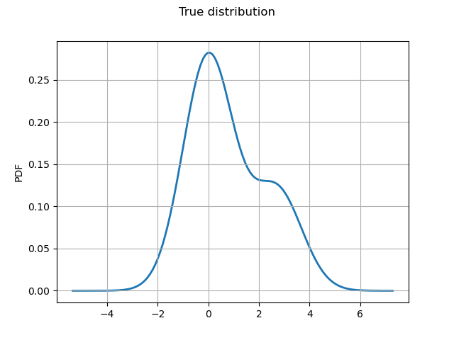
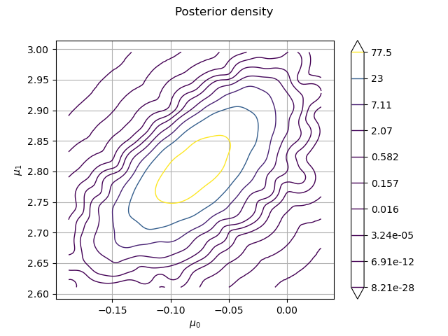

Note
Go to the end to download the full example code
Gibbs sampling of the posterior distribution¶
We sample the from the posterior distribution of the parameters of a mixture model.
![X \sim 0.7 \mathcal{N}(\mu_0, 1) + 0.3 \mathcal{N}(\mu_1, 1),]()
where  and
and  are unknown parameters.
They are a priori i.i.d. with prior distribution
are unknown parameters.
They are a priori i.i.d. with prior distribution  .
This example is drawn from Example 9.2 from Monte-Carlo Statistical methods by Robert and Casella (2004).
.
This example is drawn from Example 9.2 from Monte-Carlo Statistical methods by Robert and Casella (2004).
import openturns as ot
from openturns.viewer import View
import numpy as np
ot.RandomGenerator.SetSeed(100)
Sample data with  and
and  .
.
N = 500
p = 0.3
mu0 = 0.0
mu1 = 2.7
nor0 = ot.Normal(mu0, 1.0)
nor1 = ot.Normal(mu1, 1.0)
true_distribution = ot.Mixture([nor0, nor1], [1 - p, p])
observations = np.array(true_distribution.getSample(500))
Plot the true distribution.
graph = true_distribution.drawPDF()
graph.setTitle("True distribution")
graph.setXTitle("")
graph.setLegends([""])
_ = View(graph)

A natural step at this point is to introduce
an auxiliary (unobserved) random variable  telling from which distribution
telling from which distribution  was sampled.
was sampled.
For any nonnegative integer  ,
,
 follows the Bernoulli distribution with
follows the Bernoulli distribution with  ,
and
,
and ![X_i | Z_i \sim \mathcal{N}(\mu_{Z_i}, 1.0)]() .
.
Let  (resp.
(resp.  ) denote the number of indices
such that
) denote the number of indices
such that  (resp.
(resp.  ).
).
Conditionally to all  and all ,
and are independent:
follows
and all ,
and are independent:
follows
![\mathcal{N} \left(\sum_{Z_i=0} \frac{X_i}{0.1 + n_0}, \frac{1}{0.1 + n_0} \right)]() and follows
and follows
![\mathcal{N} \left(\sum_{Z_i=1} \frac{X_i}{0.1 + n_1}, \frac{1}{0.1 + n_1} \right)]() .
.
For any , conditionally to , and ,
is independent from all  (
( )
and follows the Bernoulli distribution with parameter
)
and follows the Bernoulli distribution with parameter
![p = \frac{p \exp \left( -(X_i - \mu_1)^2 / 2 \right) }{p \exp \left( -(X_i - \mu_1)^2 / 2 \right) + (1-p) \exp \left( -(X_i - \mu_0)^2 / 2 \right) }]()
We now sample from the joint distribution of  conditionally to the using the Gibbs algorithm.
We define functions that will translate a given state of the Gibbs algorithm into the correct parameters
for the distributions of , , and the .
conditionally to the using the Gibbs algorithm.
We define functions that will translate a given state of the Gibbs algorithm into the correct parameters
for the distributions of , , and the .
def nor0post(pt):
z = np.array(pt)[2:]
x0 = observations[z == 0]
mu0 = x0.sum() / (0.1 + len(x0))
sigma0 = 1.0 / (0.1 + len(x0))
return [mu0, sigma0]
def nor1post(pt):
z = np.array(pt)[2:]
x1 = observations[z == 1]
mu1 = x1.sum() / (0.1 + len(x1))
sigma1 = 1.0 / (0.1 + len(x1))
return [mu1, sigma1]
def zpost(pt):
mu0 = pt[0]
mu1 = pt[1]
term1 = p * np.exp(-((observations - mu1) ** 2) / 2)
term0 = (1.0 - p) * np.exp(-((observations - mu0) ** 2) / 2)
res = term1 / (term1 + term0)
# output must be a 1d list or array in order to create a PythonFunction
return res.reshape(-1)
nor0posterior = ot.PythonFunction(2 + N, 2, nor0post)
nor1posterior = ot.PythonFunction(2 + N, 2, nor1post)
zposterior = ot.PythonFunction(2 + N, N, zpost)
We can now construct the Gibbs algorithm
initialState = [0.0] * (N + 2)
sampler0 = ot.RandomVectorMetropolisHastings(
ot.RandomVector(ot.Normal()), initialState, [0], nor0posterior
)
sampler1 = ot.RandomVectorMetropolisHastings(
ot.RandomVector(ot.Normal()), initialState, [1], nor1posterior
)
big_bernoulli = ot.ComposedDistribution([ot.Bernoulli()] * N)
sampler2 = ot.RandomVectorMetropolisHastings(
ot.RandomVector(big_bernoulli), initialState, range(2, N + 2), zposterior
)
gibbs = ot.Gibbs([sampler0, sampler1, sampler2])
Run the Gibbs algorithm
s = gibbs.getSample(10000)
Extract the relevant marginals: the first ( ) and the second ().
) and the second ().
posterior_sample = s[:, 0:2]
Let us plot the posterior density.
ks = ot.KernelSmoothing().build(posterior_sample)
graph = ks.drawPDF()
graph.setTitle("Posterior density")
graph.setLegendPosition("bottomright")
graph.setXTitle(r"$\mu_0$")
graph.setYTitle(r"$\mu_1$")
_ = View(graph)
View.ShowAll()

Total running time of the script: ( 0 minutes 13.743 seconds)